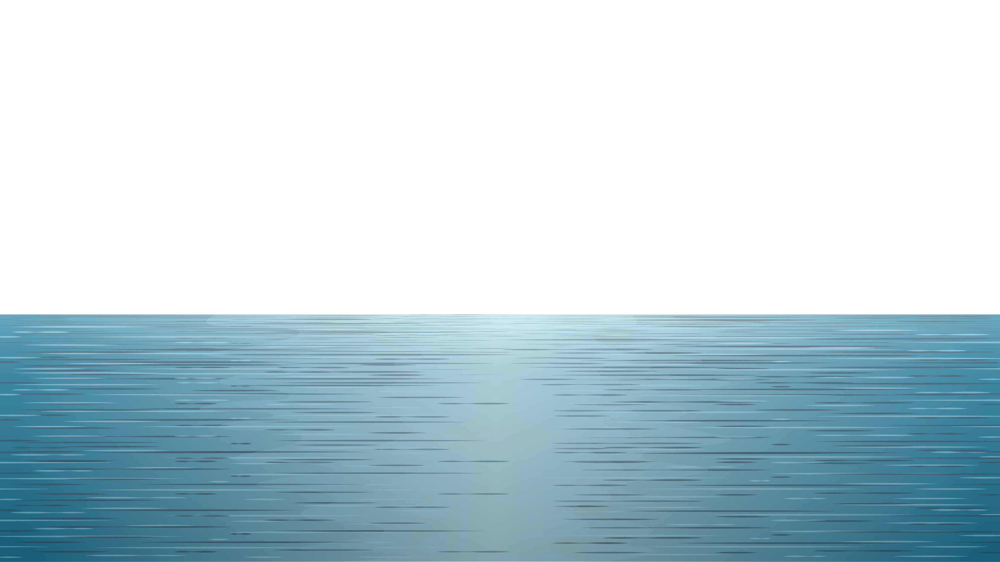

Below the Horizon
0m (0ft)
The Epipelagic Zone
0-200m (0-660ft)

Also known as the sunlight zone for its abundance of matural light, or the surface zone for its position at the surface level.
200m (660ft)
The Mesopelagic Zone
200-1000m (660-3300ft)
Also known as the twilight zone or the midwater zone as sunlight this deep is very faint. Because of this, it is within this zone that bioluminescence - light created or emitted by a chemical reaction within a living organism - begins to appear on life.
1000m (3300ft)
The Bathypelagic Zone
1,000-4,000m (3,300-13,100ft)


Also known as the midnight zone due to its constant darkness. The only light at this zone and lower comes from the bioluminescence of the animals themselves.
4000m (13100ft)
The Abyssopelagic Zone
4,000-6,000m (13,100-19,700ft)
The pitch-black bottom layer of the ocean, with 3/4 of the area of the deep ocean floor is in this zone.
6000m (19700ft)
The Hadal Zone
6,000-10,994m (19,700-36,070ft)
This is the deepest zone in the ocean, to the very bottom in the Mariana Trench off the coast of Japan.
10,994m (36,070ft)
???
>10,994m (36,070ft)
More than 80% of the ocean has never been mapped, explored, or even seen by humans. American undersea explorer and buisnessman Victor Vescovo is said to be the human that has gone the deepest in the ocean ever recorded, at 10,927m (35,853ft) - well into the Challenger Deep (the deepest known point in the world's oceans) at the southern end of the Pacific Ocean's Mariana Trench.